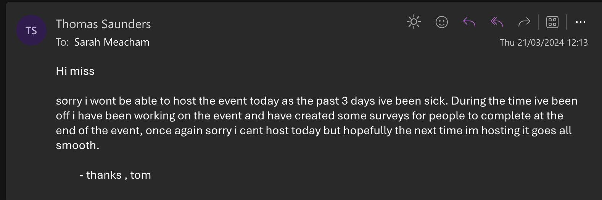
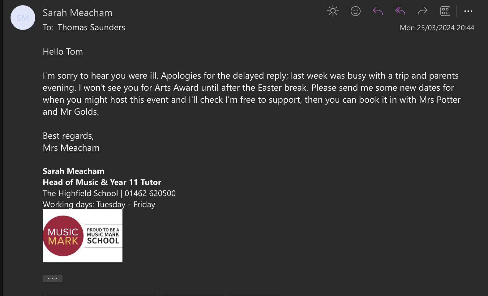

Tom's Portfolio

I chose music as my new art form because outside of school i am learning piano and music had taken my interest.
Week 1: I started an online course to learn CSS, this would allow me to improve my websites by adding animations to my sites.
Week 2: Im a quarter of the way through the course. So far I’ve been able to import animations into my site using animate.style as a library to hold all of the animations im using.
Week 3: Im halfway through the course, so far I’ve learnt to add in animations to my sites using animate.style - I have also learnt to make a dark button for my sites, Ive done this by inverting the background of the site when pushing the button / toggling the switch.
Week 4: Im 3/4s of the way through the course. Ive learnt to process my animations on the server as to reduce the strain/load on the hosts pc - this as a result can make the animations easier to run and make the site smoother and load faster for the user.
Week 5: Ive finished the course! Within the course I learnt to, import animations from an online animation bank (animate.style), learnt to make a “dark mode” button - this allows ease of access for the user, and finally I learnt to host the animations online instead of on the users browser as a way of saving cpu/gpu usage for improving performance.
Week 6: Ive managed to incorporate these into my main arts award program. An example of where this can be seen is when you load up the site for the first time - an animation plays and the piano pops up from the bottom of the screen.
as a secondary art form I learnt piano, This also allowed me to help contribute towards my freinds arts award as his main art form was piano so I was able to ask him for help
Presented the website piano i made infront of the class
A final review, including reflection on the new skills developed and the influence this has had on their main art form/arts practice
I believe that the new art form I've been practicing has helped me to add new features to my websites that I wouldn't normally include. An example of this would be added features (IPC) playing “still dre” by snoop dog or TTYTIU playing the keys to happy birthday. I also added some QOL (Quality of life features) - e.g toggling the key positions with a button aswell as adding a startup animation when the page is loaded
Evidence of research into oppurtunities to participate in arts

The reason i chose to take a different course over these is due to most of these courses costing upwards of £700
At first i was looking into these courses as web design and development is core for the piano project i was making however in the end i took online classes for web development and didn't use any of these courses - however externally i may take the web design award course for my personal statement
On the online course for web development i did, they split the course into segments, these consisted of HTML, JAVASCRIPT and CSS - HTML was the first part of the online course that i sat, In this we layed out the basic part of the site, e.g the titles headers body etc. This lasted about 1 hour. The second part of the course was Javascript, this part of the course was dedicated to making the features of the website, such as dark mode - buttons search bars and input fields, This was a significant portion of the course and lasted just under 3 hours, one important trick i learnt when going through the course was count controlled loops, these forms of loops allow you to repeat a certain section of code a set number of times. Lastly we did the CSS, this part of the course was just to make the site look pretty, this was done with borders , background colors , font colors etc. This was the shortest part of the course and lasted about 45 minutes (apx)
One web-developer was someone i saw on linkedin (Jeffrey Zeldman) as his main job is web development he gets commissioned to design websites for companies e.g home pages, index pages - however i was unable to contact him however i did manage to see his linkedin page and saw him doing main web pages for large corporations.
My research has allowed me to improve my current skill set - One way i am planning on improving my skill set further is by taking a AWS cloud computing course - as my interests for the future lay in cyber security and one of the requirements i need for that job/position is the qualifications from the cloud practitioner exam. ( i'm expecting to it this exam in june)
My arts issue is “ is AI ruining creativity” and i have chose this topic as AI is a main focal point in the news
Positive Aspects:
Augmentation of Creativity: AI tools can be used to augment human creativity by providing new perspectives, generating ideas, and assisting in the creative process. For example, AI algorithms can analyze vast amounts of data to identify patterns and trends that humans might miss.
Efficiency and Productivity: AI can automate routine tasks, allowing creative individuals to focus more on higher-level thinking and innovation. This increased efficiency can lead to more time and energy for true creative exploration.
Collaboration: AI systems can facilitate collaboration among creatives by providing a platform for shared ideas, insights, and resources. This collaborative aspect may lead to more diverse and innovative outcomes.
Inspiration: AI-generated content and algorithms can serve as a source of inspiration for artists and creators. Exposure to diverse styles and ideas generated by AI systems may spark new creative directions.
Concerns and Challenges:
Lack of Originality: Critics worry that relying too heavily on AI-generated suggestions might lead to a decrease of human creative output, as the technology might favor popular trends over truly innovative and unique ideas.
Job Displacement: There are concerns that the automation of certain creative tasks by AI could lead to job displacement for human creators. However, proponents argue that AI could also create new job opportunities in the tech and creative industries.
Ethical Concerns: The use of AI in creative fields raises ethical questions, especially when it comes to issues of intellectual property, ownership, and the potential for biases embedded in algorithms.
Overreliance on Technology: Some worry that an overreliance on AI tools might hinder the development of essential human skills, such as critical thinking, intuition, and emotional intelligence, which are crucial aspects of the creative process.
In summary, whether AI is "ruining" creativity depends on how it is implemented and integrated into the creative process. When used as a tool to enhance human creativity and efficiency, AI has the potential to be a valuable asset. However, caution is needed to address concerns related to originality, job displacement, ethics, and the potential impact on human creativity. Striking a balance between the capabilities of AI and the unique qualities of human creativity will likely be a key challenge in the evolving relationship between AI and the arts.
Visionary: Leaders have a clear vision and can articulate their goals, inspiring others to work towards a common objective
Communication Skills: Effective leaders can convey their ideas clearly and listen actively to others. Strong communication fosters understanding and collaboration within a team.
Integrity: Leaders demonstrate honesty, trustworthiness, and ethical behavior. They act in a principled manner, earning the respect and trust of their team.
Adaptability: leaders should be flexible and can adapt to changing circumstances. They remain resilient in challenges and encourage adaptability within their team.
My project is going to be an interactive live coding session, i would do this by setting up my laptop in the common room to the projector and ask for requests from people in the common room on what to make, my main outcome of this would to be to help people with there coding and improve my own, one way i would collect feedback from this project would be a survey i could airdrop to people to collect feedback on what to improve
while preparing for my event i had to delay and reschedule as a result of me being sick aswell as not having all the neccessary coding ready for the event. below is the screenshots between my teacher and i where i ask if it would be able to reschedule
 